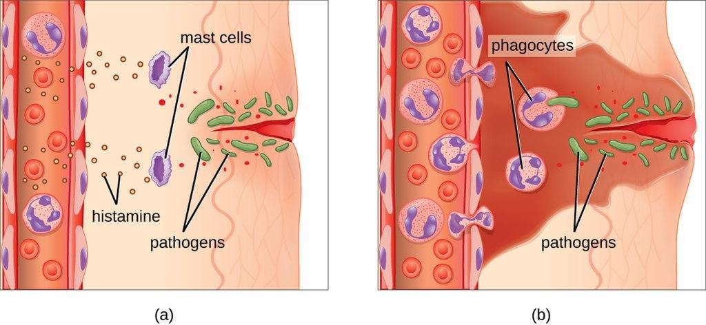
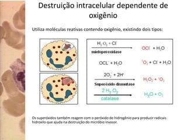
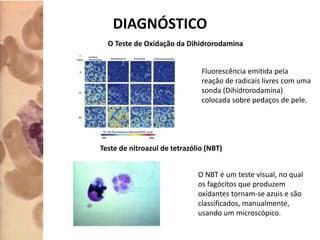
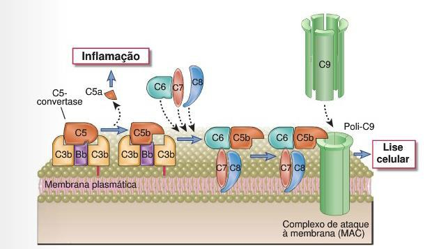
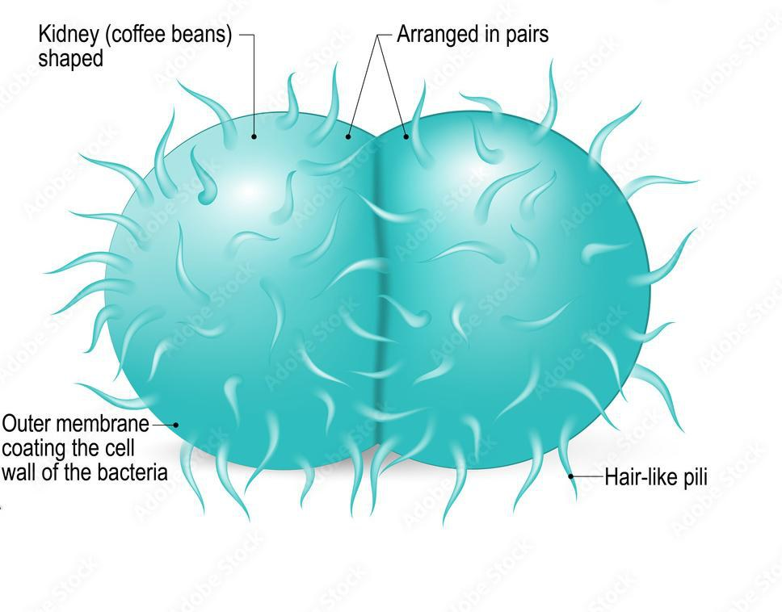
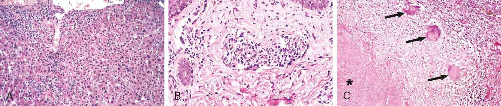
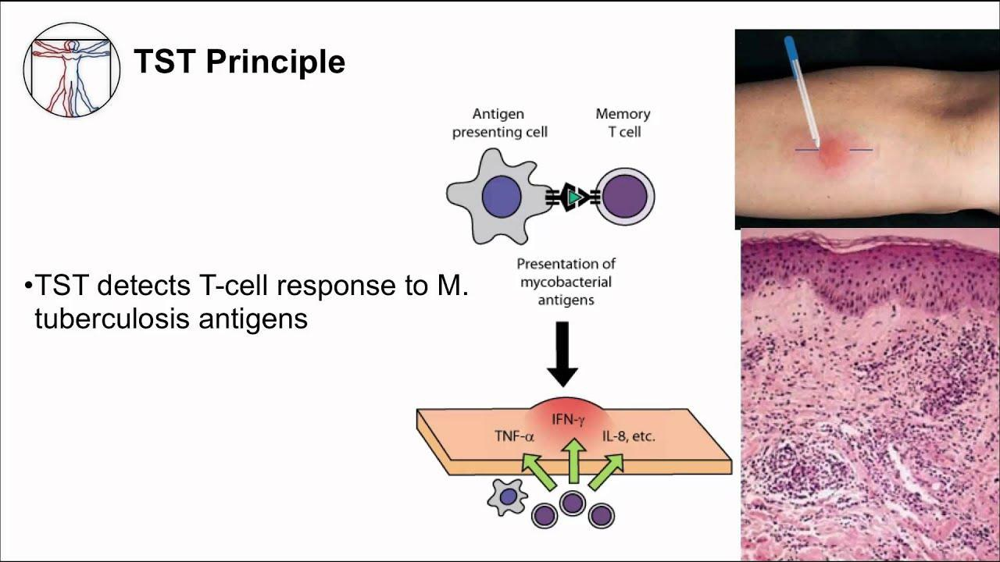
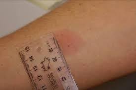
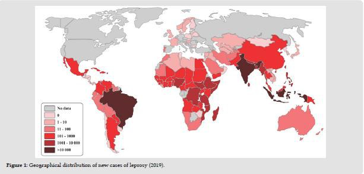

Resposta Imune a Bactérias — Extracelulares e Intracelulares
Por que uma criança com hemograma, imunoglobulinas e complemento normais desenvolve abscessos de repetição por bactérias que qualquer outra criança eliminaria sem esforço? Por que a mesma Neisseria meningitidis que mata a maioria dos pacientes em horas causa, em uma jovem com deficiência de C6, apenas episódios recorrentes dos quais ela sempre se recupera? E por que o mesmo bacilo, Mycobacterium leprae, produz em um paciente uma única lesão que cicatriza sozinha e, em outro, uma doença desfigurante e infinitamente bacilífera?
Fundamentos necessários #
Este compêndio pressupõe os mecanismos básicos já saturados em outros módulos e foca na aplicação clínica: qual bactéria, qual defeito imunológico, qual fenótipo. Revisão mínima do que é usado aqui: fagocitose e burst oxidativo — neutrófilos e macrófagos internalizam bactérias opsonizadas e as destroem com espécies reativas de oxigênio geradas pela NADPH oxidase (ver Imunidade Inata); complemento — via alternativa ativa-se espontaneamente sobre superfícies bacterianas, culminando no complexo de ataque à membrana (MAC, C5b-9) (ver Sistema Complemento); polarização Th — Th1 ativa macrófagos via IFN-γ (patógenos intracelulares), Th17 recruta neutrófilos via IL-17 (patógenos extracelulares/mucosas) (ver Th1, Th2, Th17); anticorpos opsonizantes — IgG liga FcγR de fagócitos, IgM e IgG ativam a via clássica do complemento (ver Anticorpos).
Conceitos-chave #
Extracelular → opsonização + complemento + Th17. Intracelular → Th1 + CTL. O fagócito é comum às duas vias, mas ativado de formas diferentes.
Um defeito seletivo em um braço do sistema imune revela, pela infecção que ele permite, exatamente qual mecanismo aquele braço executava.
Sem NADPH oxidase funcional, só bactérias catalase-positivas — que destroem seu próprio H₂O₂ — escapam da morte oxidativa residual.
Opsonização e inflamação continuam intactas (via C3b); só a lise terminal falha — e só Neisseria depende dela de forma crítica.
Estrutura de macrófagos ativados e linfócitos Th1 que aprisiona o patógeno intracelular sem eliminá-lo — a necrose caseosa central é o registro morfológico da batalha em curso.
Na hanseníase, a mesma bactéria produz doenças radicalmente diferentes conforme o paciente polariza para Th1 (tuberculoide) ou Th2 (lepromatosa).
Bactérias extracelulares — resposta imune #

Bactérias como Staphylococcus aureus, Streptococcus pneumoniae e Neisseria meningitidis vivem no espaço extracelular — acessíveis a anticorpos e complemento. A resposta inata imediata combina três eixos: barreira de mucosas (secreções, lisozima, pH ácido), fagócitos (neutrófilos, macrófagos, células dendríticas) recrutados por quimiocinas e C5a, e o sistema complemento, cuja via alternativa se ativa espontaneamente sobre a superfície bacteriana sem necessidade de anticorpo prévio. O inflamassoma (NLRP3) amplifica a resposta processando IL-1β em resposta a PAMPs e sinais de dano.
A resposta adaptativa é predominantemente humoral: IgG opsonizante, IgM e IgG ativando a via clássica do complemento, e IgA secretora em mucosas. Linfócitos T CD4⁺ Th17 amplificam o recrutamento de neutrófilos via IL-17A/F — mecanismo central contra bactérias piogênicas (ABBAS; LICHTMAN; PILLAI, 2023).
Caso clínico 1 — Doença Granulomatosa Crônica #
História clínica
João, 8 anos, apresenta história de abscessos cutâneos recorrentes desde o primeiro ano de vida. Já foi hospitalizado por pneumonia causada por Staphylococcus aureus e recentemente desenvolveu osteomielite por Serratia marcescens. Os pais relatam que vários antibióticos apresentam melhora temporária, mas as infecções retornam poucos meses depois.
Exame físico
- Cicatrizes de abscessos prévios
- Linfonodos cervicais aumentados
- Hepatoesplenomegalia discreta
Exames laboratoriais
- Hemograma: leucocitose com neutrofilia
- Imunoglobulinas: normais
- Complemento: normal
- Teste da diidrorodamina (DHR-123): ausência de explosão respiratória
- Cultura do abscesso: Staphylococcus aureus
Epidemiologia: cerca de 1 caso a cada 250.000 nascidos vivos (GeneReviews, 2023). Predomínio masculino (forma ligada ao X é a mais comum) — proporção de 86% relatada no material de aula (REICHE, 2026).

Na DGC, mutação no gene CYBB (ligado ao X, codifica gp91phox) inativa a NADPH oxidase — os fagócitos internalizam a bactéria normalmente, mas não produzem o burst oxidativo. Bactérias catalase-negativas (ex. Streptococcus) produzem seu próprio H₂O₂ como subproduto metabólico; mesmo sem NADPH oxidase do hospedeiro, esse H₂O₂ bacteriano difunde-se e é usado pela mieloperoxidase residual para gerar HOCl — a bactéria é morta com sua própria química. Bactérias catalase-positivas (S. aureus, Serratia, Burkholderia cepacia, Aspergillus) degradam esse H₂O₂ com sua própria catalase antes que a via alternativa possa usá-lo — sem NADPH oxidase do hospedeiro e sem H₂O₂ bacteriano disponível, não há substrato algum para a mieloperoxidase. O defeito é seletivo porque a única saída (H₂O₂ bacteriano) é fechada exatamente pelos organismos que a produziriam.
Diagnóstico — teste da diidrorodamina (DHR-123): substitui com vantagens o clássico teste do nitroblue tetrazolium (NBT). A sonda DHR-123 é oxidada a rodamina-123 (fluorescente) pelo H₂O₂/O₂⁻ produzidos durante a ativação neutrofílica normal, mensurável por citometria de fluxo — índice de oxidação neutrofílica (ION) referência >80; na DGC, ION <10.

Imunoglobulinas e complemento normais no caso de João não são coincidência: a DGC é um defeito puramente do fagócito, não do braço humoral — por isso a suscetibilidade é seletiva a catalase-positivos, não a bactérias em geral (ABBAS; LICHTMAN; PILLAI, 2023).
Sistema complemento — funções #
O mecanismo completo das três vias (clássica, alternativa, das lectinas) está em Sistema Complemento; aqui, apenas as quatro funções efetoras relevantes para o Caso 2:
| Função | Mecanismo |
|---|---|
| Opsonização | Facilitação da fagocitose de micro-organismos recobertos por C3b/iC3b, reconhecidos por receptores de complemento (CR1, CR3) em fagócitos |
| Inflamação | C3a, C4a e C5a ligam-se a receptores específicos, aumentando permeabilidade vascular e recrutando/ativando células inflamatórias |
| Lise | Formação de poros na membrana (complexo de ataque à membrana, C5b-9), levando à lise osmótica de micro-organismos e células infectadas |
| Remoção de complexos imunes | Remoção de complexos antígeno-anticorpo da circulação, depositando-os no baço e fígado para clearance |
Tabela 1 — Funções efetoras do sistema complemento.
Caso clínico 2 — Deficiência de Complemento (C6) e Meningite Recorrente #
História clínica
Mariana, 18 anos, estudante universitária, procura o PS com febre alta (39,5°C), cefaleia intensa, náuseas, vômitos e rigidez na nuca iniciados há aproximadamente 12 horas. Ao exame físico, apresenta-se sonolenta, desorientada no tempo, taquicárdica (115 bpm) e com múltiplas lesões petequiais nos membros inferiores e tronco. A punção lombar evidencia LCR turvo com predominância de neutrófilos, proteína elevada e glicose reduzida; a coloração de Gram revela diplococos Gram-negativos. A paciente é internada, recebendo ceftriaxona intravenosa, com boa evolução clínica.
Durante a internação, um dado chama atenção: aos 14 anos Mariana havia apresentado outro episódio confirmado de meningite meningocócica, do qual também se recuperou completamente. Ao revisar a história familiar, a mãe relata que um irmão mais velho faleceu aos 16 anos por meningite bacteriana fulminante; um primo materno também apresentou meningite na adolescência. A paciente não possui outras doenças conhecidas, nunca apresentou infecções respiratórias recorrentes, pneumonias de repetição ou infecções fúngicas/virais graves, e seu crescimento e desenvolvimento sempre foram normais.
Exame físico
- Temperatura: 39,5°C · FC: 115 bpm · PA: 95×60 mmHg
- Rigidez de nuca · Sinal de Kernig positivo
- Petéquias em membros inferiores
- Sem linfonodomegalias, sem hepatoesplenomegalia
Exames laboratoriais
- Leucócitos 19.800/mm³, neutrófilos 89%, plaquetas 145.000/mm³
- PCR e procalcitonina elevadas
- LCR: turvo, proteínas elevadas, glicose reduzida, predomínio de neutrófilos
- Hemocultura: Neisseria meningitidis
- Após recuperação — investigação imunológica: IgG/IgA/IgM normais; linfócitos T e B normais; função dos neutrófilos normal; dosagem individual dos componentes do complemento revela deficiência de C6

C6 é um componente terminal comum às três vias do complemento — sua ausência não impede a formação de C3b (opsonização continua funcional pela via alternativa) nem a geração de anafilatoxinas (C3a, C5a — inflamação preservada), mas impede a montagem do MAC. Para a maioria das bactérias, essa perda é compensada por opsonofagocitose robusta. Neisseria (meningococo e gonococo) é a exceção clinicamente relevante: sua membrana externa fina e a ausência de cápsula espessa em muitas cepas tornam a lise direta pelo MAC o mecanismo dominante de eliminação — daí a suscetibilidade seletiva e recorrente a infecções meningocócicas/gonocócicas em deficiências de C5–C9, com função normal de imunoglobulinas, linfócitos e neutrófilos, exatamente como no caso de Mariana (ABBAS; LICHTMAN; PILLAI, 2023).
Evasão da resposta imune por bactérias extracelulares #
Cada braço da resposta a bactérias extracelulares tem um mecanismo de evasão correspondente:
| Elemento do SI | Mecanismo bacteriano |
|---|---|
| PRRs do hospedeiro | Produção de PAMPs modificados; alteração da sinalização do PRR; indução de produção de IL-10 anti-inflamatória |
| Anticorpos | Alteração da expressão de moléculas de superfície; secreção de proteases anti-Ig |
| Recrutamento de neutrófilos | Secreção de toxinas que bloqueiam a célula do hospedeiro na produção de quimiocinas |
| Fagocitose | Bloqueio da ligação de receptores de fagócitos pela cápsula; inativação de EROs (ex. estafilococos catalase-positivos) |
| Sistema complemento | Prevenção da ligação/degradação de C3b; indução de IgG4 e outros isotipos que não fixam complemento |
Tabela 2 — Evasão da resposta imune pelas bactérias extracelulares, por elemento do sistema imune.
| Estratégia | Exemplo |
|---|---|
| Variação antigênica (proteína pilina, adesão) | Neisseria gonorrhoeae, Escherichia coli, Salmonella typhimurium |
| Mimetismo molecular — inibição do complemento | Streptococcus pyogenes (não S. pneumoniae): a proteína M liga o Fator H do hospedeiro à superfície bacteriana, acelerando a degradação de C3b e bloqueando a via alternativa do complemento (REED et al., 2019) |
| Resistência à fagocitose | Pneumococos: o polissacarídeo capsular inibe a fagocitose |
Tabela 3 — Mecanismos de evasão por espécie, com exemplos.

Neisseria gonorrhoeae (gonorreia) expressa variantes de pilina — proteína responsável pela adesão à mucosa — mas apenas uma variante por vez, alternando entre múltiplas versões codificadas no genoma por rearranjo programado (recombinação sítio-específica entre cópias silenciosas e o locus de expressão). O efeito é o mesmo obtido por Salmonella typhimurium com sua flagelina (alternância entre duas versões da proteína de superfície): a cada nova geração bacteriana, anticorpos previamente gerados contra a variante antiga reconhecem cada vez menos a população circulante — uma corrida armamentista onde o hospedeiro está sempre um passo atrás.
Caso clínico 3 — Resposta Neutrofílica Aguda #
Jovem de 17 anos, sexo masculino, é levado ao atendimento de urgência pela mãe por apresentar, há um dia e meio, inapetência, náuseas, vômitos, mal-estar geral, dor abdominal inicialmente periumbilical migrando para a fossa ilíaca direita, e febre. Refere obstipação há dois dias, sem trauma ou outra causa aparente. Ao exame: regular estado geral, prostrado, temperatura 38,6°C, FR aumentada, desconforto à palpação abdominal com sinal de descompressão brusca positivo (Blumberg).
| Parâmetro | Resultado (%) | Resultado (absoluto) | Referência (/mm³) |
|---|---|---|---|
| Metamielócitos | 2% | 271,6/mm³ | 0 |
| Bastões | 10% | 1.358/mm³ | 0–500 |
| Segmentados | 78% | 10.592,4/mm³ | 2.000–8.000 |
| Linfócitos | 8% | 1.086,4/mm³ | 1.000–5.000 |
| Monócitos | 2% | 271,6/mm³ | 200–1.000 |
| Plaquetas | — | 186.000/mm³ | 180.000–400.000 |
Tabela 4 — Hemograma com desvio à esquerda (metamielócitos + bastões elevados) e neutrofilia com granulações tóxicas. PCR 57,0 mg/L (VR <10 mg/L); VHS 45 mm/hora. Raio X de abdômen com sombra radiopaca em fossa ilíaca direita; ultrassom evidencia apêndice tubular de 8 mm.
Interpretação: o quadro combina dor migratória para fossa ilíaca direita, sinal de Blumberg positivo, febre, leucocitose com desvio à esquerda acentuado (bastonetes + metamielócitos — sinal de demanda medular aguda por neutrófilos maduros), PCR e VHS elevados, e apêndice de 8 mm (limite superior normal ≤6 mm) com fecalito radiopaco — hipótese diagnóstica principal: apendicite aguda. O padrão hematológico ilustra, à beira-leito, exatamente o que a seção anterior descreveu em mecanismo: infecção bacteriana aguda (tipicamente polimicrobiana — flora entérica, incluindo E. coli e anaeróbios) dispara recrutamento medular de neutrófilos tão rápido que formas imaturas (bastões, metamielócitos) são lançadas na circulação antes de completar maturação — o "desvio à esquerda" é a assinatura laboratorial da resposta inata extracelular em curso.
Bactérias intracelulares — resposta imune #
Bactérias intracelulares obrigatórias ou facultativas — Mycobacterium tuberculosis, Mycobacterium leprae, Listeria monocytogenes, Chlamydia trachomatis — infectam células hospedeiras e persistem dentro delas, inacessíveis a anticorpos circulantes. A imunidade inata depende de macrófagos, inflamação e, quando a infecção persiste, formação de granuloma. A imunidade adaptativa é predominantemente celular: Th1 ativa macrófagos via IFN-γ, linfócitos T CD8⁺ (CTLs) destroem diretamente células infectadas, e linfócitos B/anticorpos específicos têm papel coadjuvante.
A principal resposta imunológica protetora contra bactérias intracelulares é o recrutamento e ativação de fagócitos mediados por células T (imunidade mediada por células) — não anticorpos. Indivíduos com deficiência de imunidade celular (linfócitos T) são seletivamente mais suscetíveis a infecções por micro-organismos intracelulares, o espelho exato do padrão visto no Caso 1 (defeito de fagócito → suscetibilidade a catalase-positivos) e no Caso 2 (defeito de complemento terminal → suscetibilidade a Neisseria) (ABBAS; LICHTMAN; PILLAI, 2023).
A cooperação entre T CD4⁺ e T CD8⁺ é central: CD4⁺ Th1 ativa macrófagos para destruir bactérias no fagossomo; CD8⁺ elimina células cuja carga bacteriana já escapou do controle do macrófago, via granzima/perforina e Fas-FasL — dupla camada de defesa contra um patógeno que, por definição, já está "dentro" da célula.
A ativação de macrófagos em resposta a micro-organismos intracelulares é capaz de causar lesão tecidual — resultado de reações de hipersensibilidade do tipo tardio (tipo IV) a antígenos de proteína microbiana. A estimulação antigênica crônica e a ativação continuada de células T e macrófagos podem resultar na formação de granulomas em torno dos micro-organismos: a defesa que contém a bactéria é a mesma que destrói o tecido normal ao redor. Ver Hipersensibilidade → Tipo IV.
Evasão da resposta imune por bactérias intracelulares #
| Elemento do SI | Mecanismo bacteriano |
|---|---|
| PRRs do hospedeiro | Produção de PAMPs modificados que inibem a sinalização; variação antigênica das proteínas de superfície |
| Escape da destruição fagossomal | Infecção de célula não fagocitária; síntese de moléculas que bloqueiam fusão do lisossoma, acidificação do fagossomo e morte por EROs/ERNs |
| Linfócitos T | Redução da apresentação de antígenos pelas APCs; indução das DCs a produzirem citocinas imunossupressoras |
Tabela 5 — Evasão da resposta imune pelas bactérias intracelulares, por elemento do sistema imune.
| Estratégia | Exemplo |
|---|---|
| Inibição da formação do fagolisossomo | Mycobacterium tuberculosis — lipoarabinomanana (LAM) bloqueia fusão fagossomo-lisossomo; Legionella |
| Inativação de espécies reativas de oxigênio e nitrogênio | Mycobacterium leprae |
| Ruptura da membrana do fagossomo, escape para o citoplasma | Listeria monocytogenes (listeriolisina O + duas fosfolipases) |
Tabela 6 — Evasão intracelular por espécie. M. tuberculosis cataboliza óxido nítrico e ânions superóxido, e inibe a produção de IL-12/IFN-γ pela proteína ESAT-6 (MURRAY; ROSENTHAL; PFALLER, 2023).
Listeria monocytogenes — escape para o citoplasma: usa listeriolisina O (LLO), toxina que perfura a membrana do fagossomo, para escapar ao citoplasma; ali, polimeriza actina do hospedeiro via ActA, propulsão intracelular que permite disseminação célula-a-célula sem jamais se expor ao espaço extracelular. CTLs são efetores essenciais — destroem a célula infectada antes que a bactéria migre à próxima. Ver panorama comparativo em Resposta a Patógenos → Bactérias intracelulares.
Tuberculose #
M. tb usa C3b depositado espontaneamente em sua superfície (via alternativa) para entrar no macrófago via CR3 — receptor que não dispara o burst oxidativo inicial. Dentro do fagossomo, secreta lipoarabinomanana, que inibe a fusão fagossomo-lisossomo, bloqueia a acidificação e intercepta vesículas endossomais tardias, criando um vacúolo protegido. A ativação por IFN-γ reverte esse bloqueio: upregula GTPases da família IRGM que forçam a fusão fagossomo-lisossomo, e ativa NADPH oxidase e iNOS, que destroem o bacilo — deficiência congênita de receptor de IFN-γ ou de IL-12 resulta em suscetibilidade a micobactérias atípicas, inofensivas para imunocompetentes.

O granuloma — estrutura organizada de macrófagos epitelioides, células gigantes multinucleadas e linfócitos T CD4⁺ Th1 no perímetro — é a resposta adaptativa característica da tuberculose. Contém o bacilo sem eliminá-lo definitivamente: a necrose caseosa central é o sinal morfológico da batalha em curso, e a estabilidade do granuloma depende de TNF contínuo.
Teste tuberculínico (PPD) — reação de Mantoux

O teste de oxidação da diidrorodamina não deve ser confundido com o teste tuberculínico — este último detecta memória imunológica de células T contra antígenos de M. tuberculosis, não função de fagócito. Aplicação: injeção intradérmica de PPD no antebraço; leitura: medida do diâmetro de induração (não de eritema) em 48–72h.

| Induração | Interpretação |
|---|---|
| 0–4 mm | Não reator — indivíduo não infectado por M. tuberculosis ou com resposta imune reduzida |
| 5–9 mm | Reator fraco — indivíduo vacinado com BCG ou infectado por M. tuberculosis |
| ≥10 mm | Reator forte — indivíduo infectado por M. tuberculosis (doente ou não) ou vacinado com BCG nos últimos dois anos |
Tabela 7 — Interpretação do teste tuberculínico (PPD/Mantoux) por diâmetro de induração, conforme classificação tradicional do Ministério da Saúde do Brasil (Ministério da Saúde, 2019). Protocolos de triagem para grupos de risco (ex.: HIV+, contactantes) usam ponto de corte único ≥5 mm — consultar diretriz vigente para conduta em populações especiais.
Hanseníase (Mycobacterium leprae) #

Mycobacterium leprae é um bacilo intracelular obrigatório com tropismo por células de Schwann e macrófagos cutâneos, incapaz de crescer in vitro — sua biologia foi estabelecida em grande parte por inoculação em tatus (Dasypus novemcinctus), cuja temperatura corporal baixa favorece o crescimento micobacteriano.
Espectro imunológico: tuberculoide × lepromatosa
A hanseníase é o paradigma clínico do espectro Th1↔Th2: a mesma bactéria, em hospedeiros diferentes, produz apresentações radicalmente distintas conforme o eixo de polarização — não a carga bacilar inicial determina o fenótipo, mas a resposta imune do hospedeiro.
| Característica | Tuberculoide | Lepromatosa |
|---|---|---|
| Anticorpos | Baixa concentração | Elevada concentração |
| Resposta imune celular | Mais ativa | Menos ativa |
| Granuloma | Formação em volta dos nervos, causando menor sensibilidade | Ausente ou pouco organizado |
| Carga bacilar / destruição tecidual | Menor destruição tecidual, menos micobactérias | Micobactérias multiplicam-se livremente nos macrófagos, em grande número nos tecidos; lesões destrutivas |
| Citocinas | Elevada IFN-γ e IL-2 | Baixa IFN-γ; elevada IL-4 e IL-10 |
| Polarização | Resposta Th1 | Resposta Th2 |
Tabela 8 — Espectro imunológico da hanseníase, polo tuberculoide (TT) × polo lepromatoso (LL). Formas borderline (BT, BB, BL) ocupam posições intermediárias do espectro.

O mecanismo por trás do espectro: na forma tuberculoide, a resposta Th1 (IFN-γ, IL-2) ativa macrófagos, que controlam a proliferação bacilar e formam granulomas organizados — o preço é lesão neural localizada por hipersensibilidade tardia, mas com baixa carga bacilar e boa contenção. Na forma lepromatosa, a polarização Th2 (IL-4, IL-10) suprime a ativação clássica de macrófagos: os bacilos multiplicam-se livremente dentro deles, gerando altíssima carga bacilar, resposta humoral abundante mas ineficaz (anticorpos não têm acesso ao compartimento intracelular) e destruição tecidual extensa e progressiva (FROES; SOTTO; TRINDADE, 2025).
Chlamydia trachomatis e Bordetella pertussis #
Chlamydia trachomatis
Bactéria intracelular obrigatória com ciclo bifásico (corpúsculo elementar infeccioso → corpúsculo reticulado replicativo, dentro de um vacúolo que evita fusão com lisossomo). Diferentes sorovares causam síndromes clínicas distintas por tropismo tecidual:
| Sorovares | Tropismo | Complicações principais |
|---|---|---|
| A, B, Ba, C | Conjuntiva (tracoma) | Cegueira por cicatrização corneana progressiva |
| D–K | Trato genital | Doença inflamatória pélvica, gravidez ectópica, infertilidade, esterilidade |
| L1, L2, L3 | Linfonodos regionais (linfogranuloma venéreo) | Úlceras genitais, linfadenopatia, fibrose crônica |
Tabela 9 — Sorovares de Chlamydia trachomatis, tropismo e principais complicações clínicas.
Sobrevive em vacúolo intracelular secretando proteínas que inibem fusão com lisossomo — mecanismo de evasão análogo, em princípio, ao de M. tuberculosis, mas em célula epitelial não fagocitária.
Bordetella pertussis
Cocobacilo Gram-negativo, agente da coqueluche — doença infecciosa do trato respiratório, geralmente grave em crianças pequenas. Produz toxina pertussis, moléculas de adesão e LPS; a adenilato ciclase bacteriana inibe diretamente a resposta imune do hospedeiro, e a bactéria induz citocinas anti-inflamatórias que amortecem o clearance. Cursa com inibição da fagocitose apesar de a espécie ser catalase e oxidase positiva — mais um exemplo de evasão dirigida à sinalização do fagócito, não apenas à sua bioquímica oxidativa.
Conexões com outros módulos #
Como este material se conecta
→ Sistema Complemento — o Caso 2 é a aplicação clínica direta das deficiências terminais discutidas em Sistema Complemento; leia lá o mecanismo completo das três vias antes de revisar este caso.
→ Hipersensibilidade — o granuloma tuberculoso e a lesão neural na hanseníase tuberculoide são manifestações de hipersensibilidade tipo IV; ver Hipersensibilidade para o mecanismo geral.
→ Vacinas e Imunidade Protetora — a vacinação MenACWY/MenB no Caso 2 e o BCG na interpretação do PPD são exemplos de imunização direcionada a exatamente o gap descrito aqui; ver Vacinas.
→ Hematologia (Hemograma e Anemias) — o desvio à esquerda do Caso 3 é abordado em profundidade técnica em Hematologia Clínica: Hemograma e Anemias.
Perguntas em aberto #
1. O que determina, no momento da infecção primária por M. leprae, se um indivíduo geneticamente predisposto polarizará para Th1 (tuberculoide) ou Th2 (lepromatosa)? Estudos de associação genômica identificaram loci de suscetibilidade (ex. PARK2, genes da via NOD2), mas o gatilho inicial que "decide" o eixo de polarização em um dado paciente permanece incompletamente elucidado.
2. Por que a deficiência de componentes terminais do complemento (C5–C9) confere suscetibilidade quase exclusiva a Neisseria, e não a outras bactérias Gram-negativas com membrana externa igualmente fina? A resposta usual (ausência de cápsula espessa) não explica totalmente por que espécies como Haemophilus influenzae, também encapsuladas de forma variável, não mostram a mesma dependência crítica do MAC.
3. Terapias biológicas moduladoras de IL-17 (para psoríase, espondiloartrites) aumentam risco de candidíase mucocutânea — mas qual é o risco real, ainda pouco quantificado prospectivamente, de infecções por bactérias extracelulares piogênicas nesses pacientes, dado o papel de Th17 nesta via?
Discussão #
As três perguntas que abrem este compêndio têm a mesma resposta estrutural: um defeito seletivo em um mecanismo imunológico revela, pela infecção que ele permite, exatamente qual função aquele mecanismo executava — e nenhuma outra. João desenvolve abscessos por catalase-positivos porque seu defeito é estritamente do burst oxidativo do fagócito, não do reconhecimento, da opsonização ou do recrutamento — todos intactos. Mariana sobrevive a episódios repetidos de meningite meningocócica porque seu defeito é estritamente da lise terminal via MAC, enquanto opsonização por C3b, anticorpos e imunidade celular permanecem plenamente funcionais — suficientes para conter (não sempre prevenir) a infecção antes que se torne fulminante, e suficientes para protegê-la de todo o restante do universo microbiano. E o mesmo M. leprae produz doenças opostas porque a variável decisiva não é o patógeno, mas qual dos dois braços adaptativos — Th1 celular ou Th2 humoral — o hospedeiro escolhe amplificar diante dele.
O fio condutor clínico é: localização do patógeno determina o efetor necessário, e cada efetor tem uma vulnerabilidade específica que, quando ausente, expõe seletivamente o hospedeiro a um subconjunto estreito e previsível de micro-organismos. Esse princípio — não a memorização de tabelas de patógeno por patógeno — é o que permite, diante de um paciente com infecções recorrentes, formular a pergunta certa: recorrente por qual tipo de organismo, e o que isso implica sobre qual peça, especificamente, está faltando?
Leituras recomendadas #
Referências #
Referência primária para os mecanismos de imunodeficiência primária (DGC, deficiência de complemento terminal) e para o princípio geral de resposta por localização do patógeno.
Referência primária para mecanismos de evasão bacteriana específicos por espécie (M. tuberculosis, Listeria, Chlamydia, Bordetella).
Fonte primária dos três casos clínicos, diagramas de mecanismo (DHR-123, MAC, fagocitose, granuloma, PPD) e dados epidemiológicos citados ao longo deste compêndio.
Fonte da Fig. 10 (espectro clínico da hanseníase) e da discussão atualizada do espectro Th1/Th2. Creative Commons Attribution License. Artigo.
Referência para a classificação clínica e conduta prática da hanseníase. Link.
Correção de fonte primária: o material de aula original atribuía o mecanismo de evasão do complemento via proteína M ao Streptococcus pneumoniae; a literatura confirma que este é um mecanismo do Streptococcus pyogenes (proteína M liga o Fator H, bloqueando C3b). O S. pneumoniae evade o complemento por via distinta (PspA/PspC/Hic). Artigo.
Referência para a incidência da doença granulomatosa crônica (~1:250.000 nascidos vivos) e predomínio da forma ligada ao X. Link.
Referência para o risco aumentado de reativação de tuberculose latente sob terapia anti-TNF e a recomendação de triagem com PPD/IGRA antes do início do tratamento.
Fonte da classificação tradicional de interpretação do PPD por diâmetro de induração (0–4 / 5–9 / ≥10 mm) usada na Tabela 7; a mesma diretriz define ponto de corte único ≥5 mm para grupos de risco (ex.: HIV+, contactantes de bacilíferos). Link.